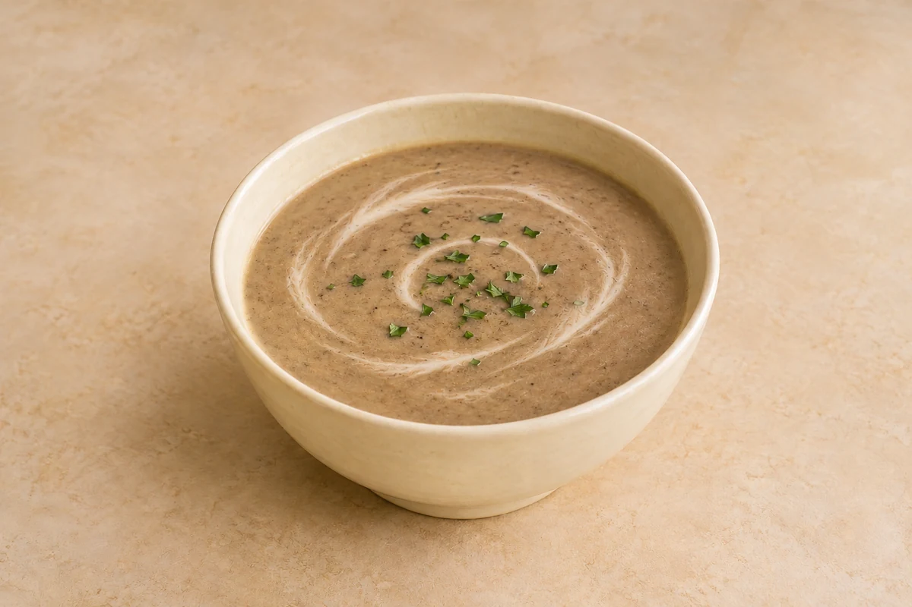

Pea & Asparagus Soup
For serving hot; allow extra chilling time if serving cold.
Soups
A smooth mushroom soup finished with single cream and optional flat-leaf parsley.
Estimated total: About 35 min totalIncludes preparation, cooking, blending and finishing.
Ingredient quantities update automatically

Cool in shallow containers, cover and refrigerate within 2 hours. Eat within 48 hours and follow any shorter ingredient use-by or opened-pack instructions.
For best texture, freeze the cooled, blended soup before adding the cream. Use airtight, labelled portions and leave expansion space. Defrost in the fridge and use within 24 hours of fully defrosting. Add the cream when reheating.
Reheat only the amount needed, once, in a saucepan, stirring until steaming hot throughout. Stir in the single cream near the end and heat through gently.
Chestnut or button mushrooms both work as written. Use vegetarian mushroom stock for a vegetarian soup. The parsley garnish is optional.
Keep chilled food at 0–5°C and follow the shortest ingredient use-by or opened-pack instruction. Cool cooked leftovers in small portions and refrigerate within 2 hours. Reheat suitable cooked leftovers only once, until steaming hot throughout; ingredients already reheated in this recipe must not be reheated again. Serve chilled desserts cold. Freezing recommendations and any exceptions for a base prepared without cream or prawns are explained in this recipe’s Freezing note.
Food-safety guidance: Food Standards Agency: chilling and freezing · reheating leftovers.